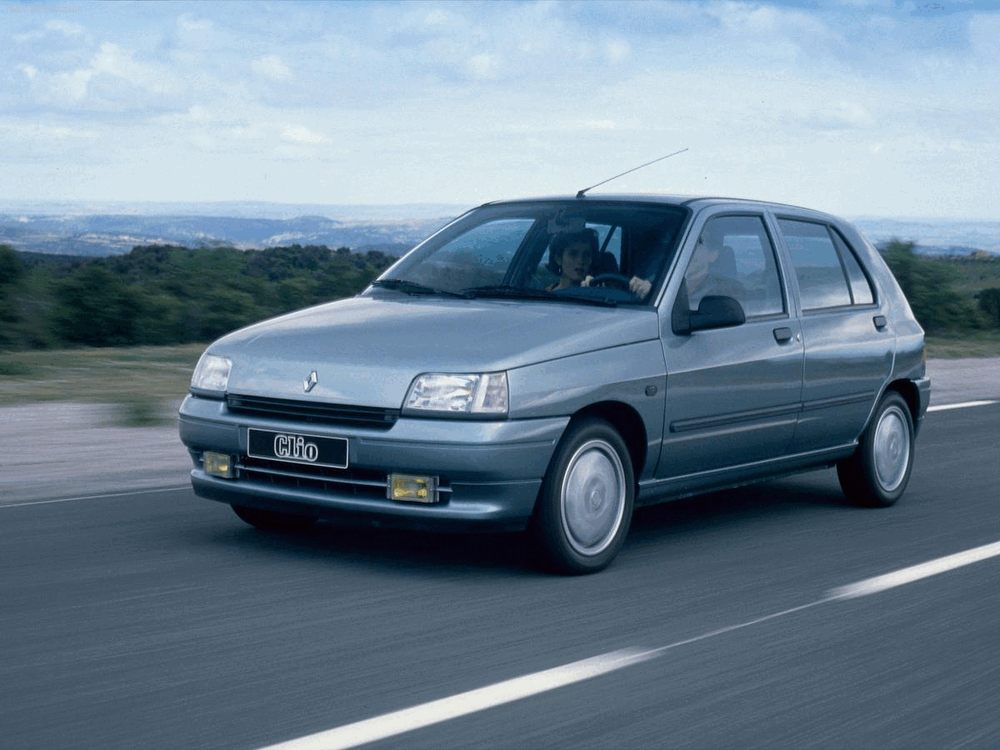

Clio 1.2 1990 16v
Com consumo médio de 6.2 litros/100km, 0 aos 100 km/h em 15.2 segundos, velocidade máxima de 155 km/h, um peso de 839 kgs, o Clio 1 Phase 1 1.2 está equipado com um motor Em linha de 4 cilindros atmosférico, a Gasolina, com o código de motor E5F.
Ver mais
